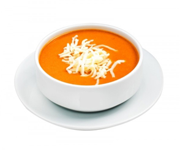

Karnabahar Kızartması
Malzemeler: Karnabahar, yumurta, un, tuz, karabiber, kızartmak için yağ.
Yapılışı: Karnabaharı haşlayın. Yumurtaya ve una bulayıp kızartın. Sarımsaklı yoğurtla servis yapabilirsiniz.

Domates Çorbası
Malzemeler: Domates, un, süt, tereyağı, tuz, karabiber.
Yapılışı: Domatesleri rendeleyin. Tereyağında unu kavurun, süt ve domatesi ekleyin. Karıştırarak pişirin. Üzerine kaşar peyniri serpebilirsiniz.

Tavuk Sote
Malzemeler: Tavuk göğsü, biber, domates, soğan, sıvı yağ, baharatlar.
Yapılışı: Tavukları doğrayıp kavurun. Sebzeleri ekleyin ve birlikte soteleyin. Sıcak servis yapın.